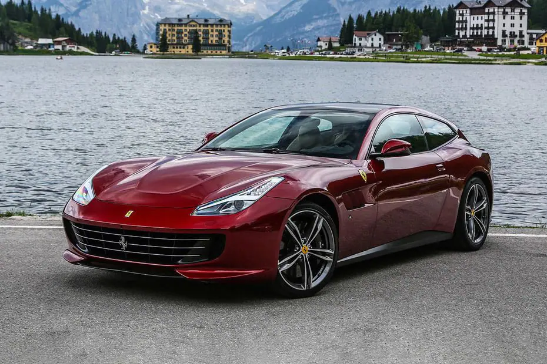

Istoria Ferrari
Ferrari este un producător de mașini sport cu sediul în Maranello, Italia. Fondată în 1929 de Enzo Ferrari, ca Scuderia Ferrari, compania a sponsorizat piloți și a produs mașini de curse înainte de a produce mașini adecvate pentru a fi conduse pe drumurile publice. În 1969, Fiat a devenit acționar la Ferrari iar acum este proprietarul majoritar. În prezent, cel mai mare acționar al grupului Fiat, cu 90%, 5% din acțiuni a fost cumpărat în 2005 de către o companie din Emiratele Arabe Unite, iar restul aparține lui Piero Ferrari, fiul lui Enzo. Compania are sediul în Maranello lângă Bologna și Modena, Italia. În 2005, Ferrari a vândut 5.409 de unități, cu o creștere a vânzărilor de 8,7%, având o cifră de afaceri de 1,5 miliarde de euro. De-a lungul istoriei, compania a fost renumită pentru participarea continuă în curse, în special în Formula 1, unde a avut mare succes. Mașinile Ferrari sunt în general văzute ca un simbol al vitezei, luxului și bogăției.
Calutul Ferrari
Simbolul celebrului Ferrari este un cal negru pe fond galben, de obicei cu inițialele Scuderiei Ferrari, SF. Inițial, simbolul caluțului a aparținut contelui și aviatorului Francesco Baracca, un legendar al asociației italiene Air Force din Primul Război Mondial, ce avea pictat pe partea aeronavelor sale, emblema actuală a mărcii Ferrari. Baracca a murit pe data de 1916, 1918, obținând 34 dueluri victorioase și numeroase victorii în echipă. Astfel, el a devenit un erou național, fiindu-i construit un monument memorabil.
Francesco Baracca a ales ca avioanele să-i fie reprezentate de un cal cabrat, în urma înscrierii sale în echipa "Battaglione Aviatori", fiind recunoscut și ca cel mai bun călăreț al regimentului de cavalerie. Există mai multe interpretări pentru alegerea sa: pe de o parte, datorită faptului că familia lui nobilă a fost cunoscută pentru posesia unui număr impresionant de cai la ferma lor din Lugo di Romagna. O altă teorie sugerează faptul că Baracca a copiat designul agresiv al căluțului de la un pilot german care a purtat sigiliul orașului Stuttgart. Interesant, reprezentanța de automobile Porsche din Stuttgart a împrumutat logo-ul său al căluțului cabrat, orașului. Această "legendă" sugerează că a fost primul avion pilotat de Baracca Stuttgart și finalizând prin a fio iar simbolul putea fi luat ca un trofeu de război.
Ferrari a concurat dintotdeauna, mai mult sau mai puțin, cu branduri de renume, foarte apreciate în întreaga lume : Porsche, Lamborghini, Maseratti, De Tomasso și multe alte mărci de automobile sport. Pe data de 17 iunie din 1923, Enzo Ferrari a câștigat o cursă importantă pe circuitul Savio de Ravenna, unde s-a întâlnit cu Contesa Paolina, mama lui Baracca. Contesa a cerut ca el să poarte un cal pe mașinile sale, sugerând că acesta ar aduce noroc, dar prima cursă la care Alfa a avut permisiunea să folosească calul pe mașini Scuderia a fost nouă ani mai târziu, în 24 de ore de Spa în 1932. Ferrari a câștigat. Ferrari a păstrat calul negru purtat și de Baracca pe planul sau, adăugând un plus de culoare (galben) pe fundal, semnificația locului său de naștere.
Calul cabrat a mai fost purtat și de Fabio Taglioni folosindu-l în motocicletele lor Ducati. Tatăl lui Taglioni a fost de fapt unul dintre însoțitorii lui Baracca și a luptat alături de el în 91 Aer Squad, dar pentru că faima brand-ului Ferrari s-a extins, Ducati a renunțat la stemă. Acest lucru poate să fi fost și rezultatul unui acord privat între cele două branduri. Calul prancing este acum simbolul unic Ferrari, recunoscut în întreaga lume.
Cele mai renumite modele Ferrari
Când vorbim despre viteză și mașini exotice, unul dintre primele nume la care se gândește lumea este supermașina italiană Ferrari. Numele Ferrari a stârnit respect și admirație încă din 1929, când Enzo Ferrari a început să sponsorizeze și să pregătească piloții pentru a concura în cursele de campionat. De atunci, Ferrari și-a schimbat mâinile și este în prezent deținut de compania Fiat, care a scos unele dintre cele mai rapide și mai luxoase supermașini disponibile.
Ferrari F40 Cunoscut ca ultimul model Ferrari aprobat personal de Enzo Ferrari, F40 ar fi un armăsar perfect pentru orice grajd. Designul său și-a sărbătorit cea de-a 40-a aniversare și, la acea vreme, era cel mai rapid și mai puternic motor electric pentru un Ferrari lansat vreodată publicului. Produs între 1987 și 1992, cu un MSRP de 400.000 USD, a fost și cea mai scumpă opțiune lansată vreodată la acea vreme. F40 a fost echipat cu un V8 de 2,9 litri cu răcire intercalată montat în spate, care era dublu turbo. Cu un timp de 0-100 de doar 4,2 secunde, F40 ar putea performa pe orice pistă cu capul sus. |
Ferrari 458 Iconicul Ferrari 458 Italia a stârnit furori încă de la concepția sa în 2009. Fiind succesorul lui F430, 458 a venit în cele din urmă cu designul său unic și semnăturile care provoacă și astăzi jocul. Cu experiență în cursele de Formula 1, Ferrari a reușit să ducă multe dintre tehnologiile direct de la mașina de curse pe străzi, determinând această doamnă în roșu să ceară respect. 458 Italia a reușit să coboare pe pistă cu o viteză maximă de 202 MPH sau 325 km/h. Această bestie este propulsată de un V8 de 4,5 litri cu injecție directă de combustibil, o premieră pentru mașinile de drum cu motor central de la Ferrari. Produse între 2010 și 2015, multe dintre aceste mașini exotice sunt încă în jur și reprezintă un plus popular pentru grajdul oricui de jucării. |
Portofino Dacă vântul în părul tău este o opțiune pe care o vrei, atunci Portofino te are acoperit. Dispunând de un hardtop detașabil, Portofino poate oferi tot ce este mai bun din ambele lumi. Designul său oferă un stil de conducere grandios de turism, cu motoare electrice montate în față, care sunt un motor V8 de 3,9 litri dublu turbo. Acesta este un motiv de vânzare uriaș pentru mulți șoferi care plănuiesc să se bucure de Portofino mai regulat decât de piesele de colecție care au devenit atât de multe dintre aceste supermașini. Fiind una dintre cele mai accesibile modalități de a te alătura clubului proprietarilor de elită Ferrari, Portofino vine la puțin peste 240.000 de dolari. De când a fost introdus în 2017, acest supermașină a fost renovat ca Portofino M în 2020, cu funcții suplimentare. |
GTC4 Lusso A lua întreaga familie la o ieșire cu Ferrari nu este fezabilă în majoritatea situațiilor. Dar GTC4Lusso le oferă proprietarilor această opțiune cu patru locuri și un portbagaj. Nu lăsați asta să vă păcălească - aceasta nu este o mașină de familie sau o mașină de drum. |
 |
 |